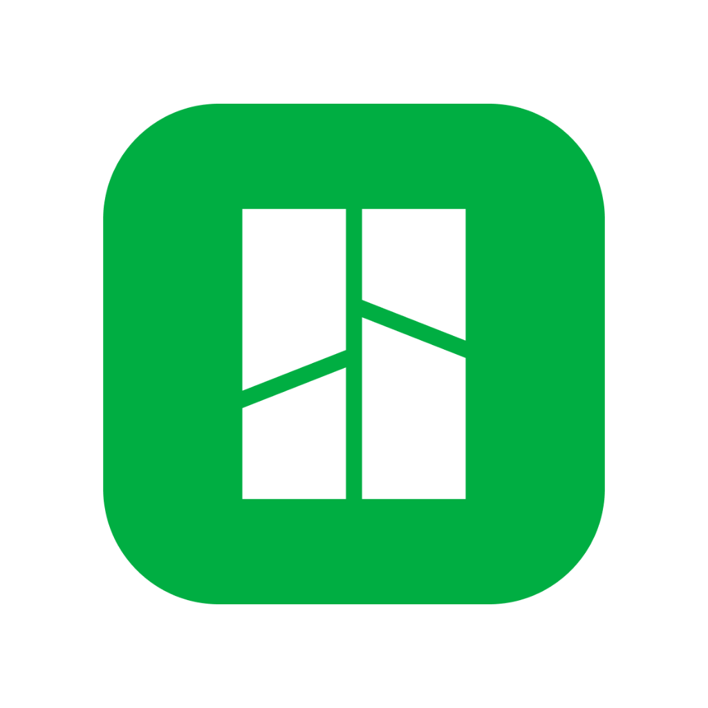

Scan-Vorbereitung
Objekt für 3D-Scan vorbereiten
Optimale Bedingungen für einen erfolgreichen Scan schaffen
Schritt-für-Schritt Anleitung für

X2D


Optimale Bedingungen für einen erfolgreichen Scan schaffen